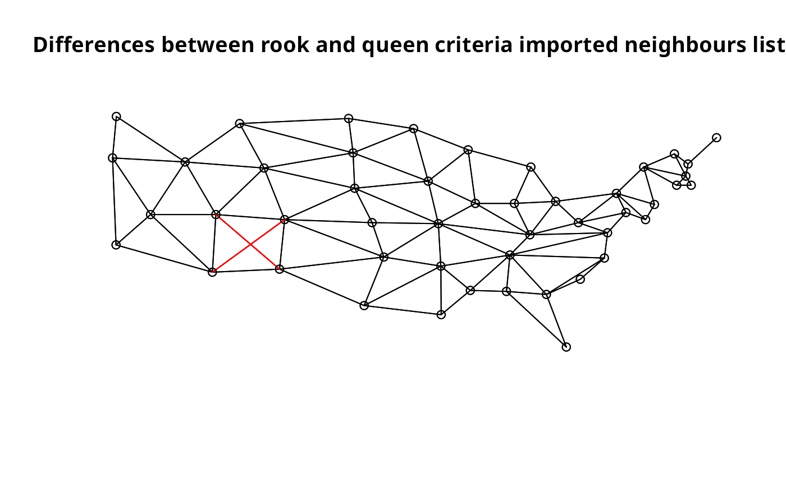

read.gal.RdThe function read.gal() reads a GAL lattice file into a neighbours list for spatial analysis. It will read old and new style (GeoDa) GAL files. The function read.geoda is a helper file for reading comma separated value data files, calling read.csv().
read.gal(file, region.id=NULL, override.id=FALSE) read.geoda(file, row.names=NULL, skip=0)
| file | name of file with GAL lattice data |
|---|---|
| region.id | region IDs in specified order to coerse neighbours list order and numbering to that of the region.id |
| override.id | override any given (or NULL) region.id, collecting region.id numbering and order from the GAL file. |
| row.names | as in row.names in |
| skip | skip number of lines, as in |
Luc Anselin (2003): Spatial Analysis Laboratory, Department of Agricultural and Consumer Economics, University of Illinois, Urbana-Champaign, http://www.csiss.org/gispopsci/workshops/2011/PSU/readings/W15_Anselin2007.pdf; Luc Anselin (2003) GeoDa 0.9 User's Guide, pp. 80--81, Spatial Analysis Laboratory, Department of Agricultural and Consumer Economics, University of Illinois, Urbana-Champaign, https://s3.amazonaws.com/geoda/software/docs/geoda093.pdf; GAL - Geographical Algorithms Library, University of Newcastle
The function read.gal() returns an object of class nb with a list of integer vectors containing neighbour region number ids. The function read.geoda returns a data frame, and issues a warning if the returned object has only one column.
Example data originally downloaded from now dead link: http://sal.agecon.uiuc.edu/weights/zips/us48.zip
us48.fipsno <- read.geoda(system.file("etc/weights/us48.txt", package="spdep")[1]) us48.q <- read.gal(system.file("etc/weights/us48_q.GAL", package="spdep")[1], us48.fipsno$Fipsno) us48.r <- read.gal(system.file("etc/weights/us48_rk.GAL", package="spdep")[1], us48.fipsno$Fipsno) data(state) if (as.numeric(paste(version$major, version$minor, sep="")) < 19) { m50.48 <- match(us48.fipsno$"State.name", state.name) } else { m50.48 <- match(us48.fipsno$"State_name", state.name) } plot(us48.q, as.matrix(as.data.frame(state.center))[m50.48,])